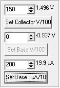

|  | Collector and Base values are
set using integers entered into the spin edit boxes. Collector and Base
integers are divided by 100 then assigned the
closest DAC (digital to analog converter) voltage. For Base
current, the integer is divided by 10 to obtain the DAC value in uA.
The data is sent via the DA0 or DA1 command to the Mini_CT interface.
Clicking Set Collector V/100 sends the value to the Collector voltage DAC and clicking Set Base V/100 or Set Base I uA/10 sends the value to the Base Voltage DAC. If the Base switch is in the current position, only the Set Base I uA/10 button is enabled. If the Base switch is in the voltage position, only the Set Base V/100 button is enabled. When the Set Collector V/100 button is pressed, Mini_CT is commanded to stop generating the continuous AC waveform. The collector votlage is then a static set value. Use the Read Voltages button to measure values in the static state. Running a sweep with the Run Sweep button will disable the static collector voltage. |